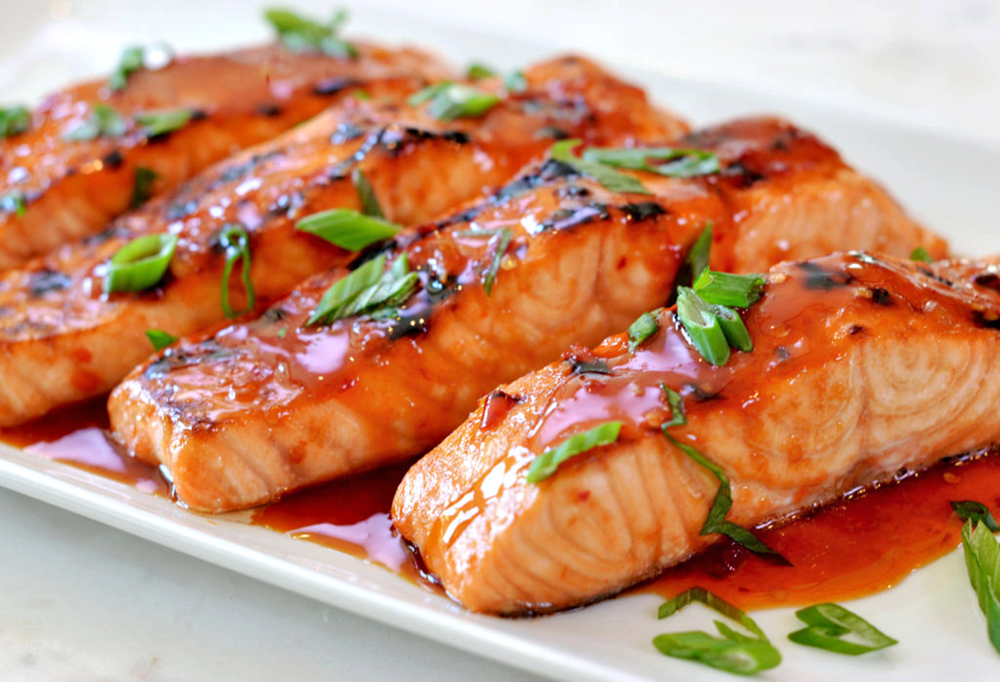

Chili Salmon

Description
THIS TEXT IS PLAIGARIZED FROM TASTY
Savor the simplicity of this 3-Ingredient Chili Glazed Salmon that packs a flavorful punch. With just a touch of sweet and spicy, this dish will have your taste buds dancing and begging for more.
Ingredients
- 4 oz salmon, 3 fillets
- 1/2 cup chili sauce
- 1/4 cup fresh sallions, chopped
Steps
- Preheat oven to 400°F (200˚C).
- In a bowl, mix together the salmon, chili sauce, and the scallions.
- Place the fillets on a baking tray lined with parchment paper. Spoon any leftover sauce on top of the salmon.
- Bake for 12-15 minutes, until the salmon is cooked but still tender.